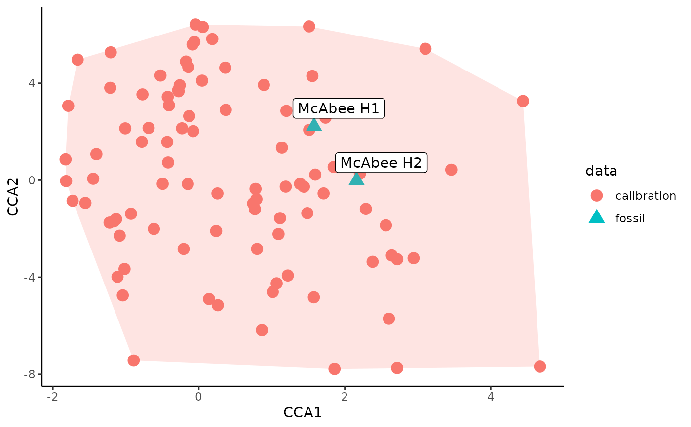

Test if site leaf physiognomy falls within the physiognomic space of the DiLP calibration dataset
Source:R/dilp_cca.R
dilp_cca.Rddilp_cca plots a canonical correspondence analysis (CCA) ordination of the leaf
physiognomic space represented in the calibration dataset of Peppe et al. (2011).
The fossil sites being tested are placed along the CCA axes. If a fossil site
falls outside of the plotted calibration space, paleoclimate reconstructions
for that fossil site should be treated with caution.
Usage
dilp_cca(
dilp_table,
physiognomy_calibration = physiognomyCalibration,
climate_calibration = climateCalibration
)Arguments
- dilp_table
The results of a call to
dilp()- physiognomy_calibration
A physiognomic calibration dataset. Defaults to an internal version of
physiognomy_calibration_data.- climate_calibration
A climate calibration dataset. Defaults to an internal version of
climate_calibration_data.
References
Peppe, D.J., Royer, D.L., Cariglino, B., Oliver, S.Y., Newman, S., Leight, E., Enikolopov, G., Fernandez-Burgos, M., Herrera, F., Adams, J.M., Correa, E., Currano, E.D., Erickson, J.M., Hinojosa, L.F., Hoganson, J.W., Iglesias, A., Jaramillo, C.A., Johnson, K.R., Jordan, G.J., Kraft, N.J.B., Lovelock, E.C., Lusk, C.H., Niinemets, Ü., Peñuelas, J., Rapson, G., Wing, S.L. and Wright, I.J. (2011), Sensitivity of leaf size and shape to climate: global patterns and paleoclimatic applications. New Phytologist, 190: 724-739. https://doi.org/10.1111/j.1469-8137.2010.03615.x
Examples
results <- dilp(McAbeeExample)
dilp_cca(results)
